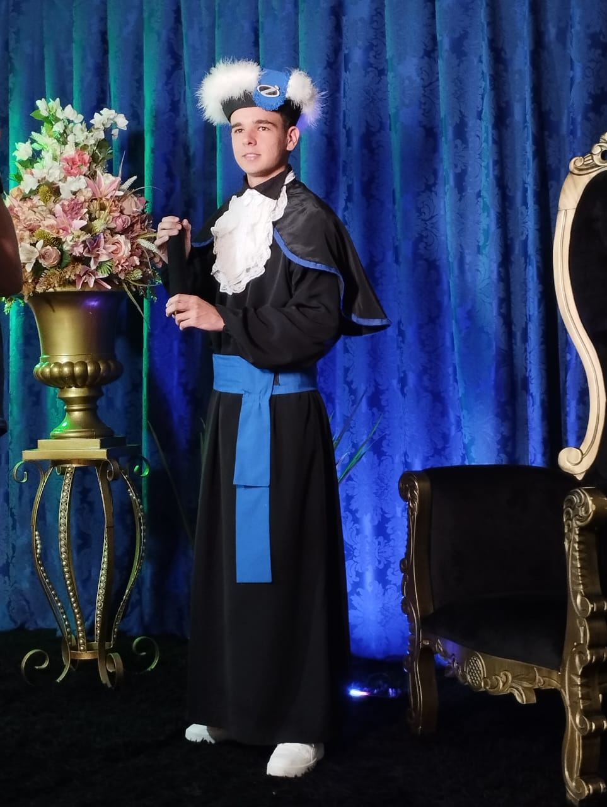

Olá, sou Rodrigo Bernardi de Quadros.

Olá, sou Rodrigo Bernardi de Quadros.
Estudante de Ciência da Computação, com experiência em programação e informática básica. Tenho domínio de HTML, CSS e JavaScript, e estou sempre em busca de aprender novas tecnologias e criar soluções criativas. Tenho interesse em projetos colaborativos nas áreas de inovação, tecnologia e desenvolvimento web.